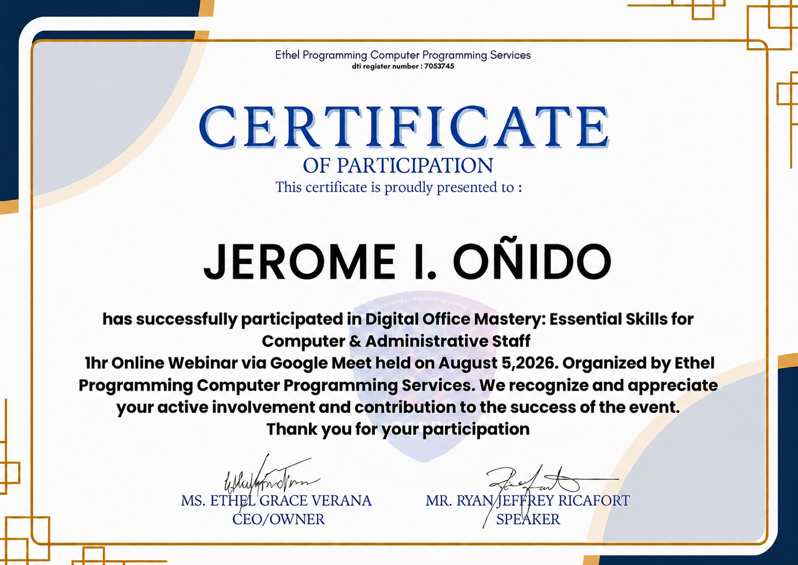
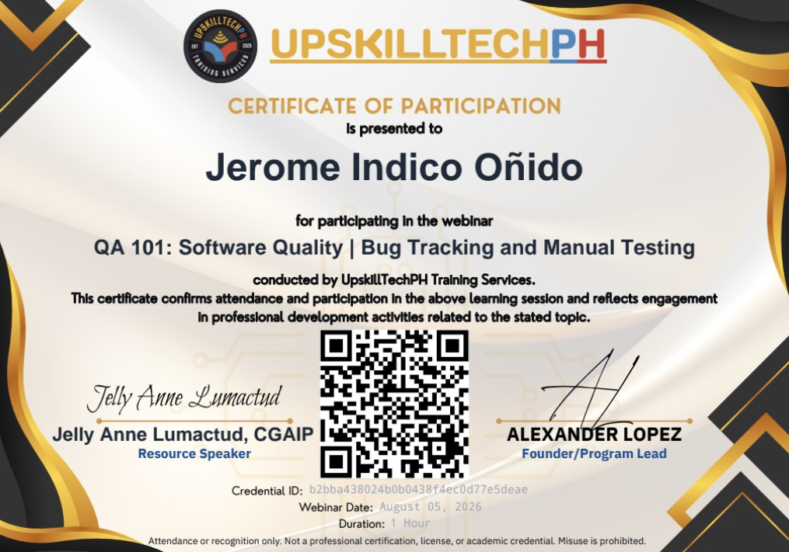

PROJECT 01Management System
Sales, Ordering and Inventory Tracking Management System
A proposed business-use system for recording sales, keeping track of orders, and monitoring inventory records.
BSIT STUDENT · ASPIRING WEB DEVELOPER
I am a BSIT student interested in web development, programming, and creating useful digital solutions. I am building my skills through coursework, practice, and system projects.

MY FOCUS
Building clear, practical, and user-friendly websites and systems.
ABOUT ME
My background, interests, and the direction I want to grow in.
I am a Bachelor of Science in Information Technology (BSIT) student with an interest in web development and building useful digital solutions. I enjoy learning how websites and applications are planned, designed, developed, and improved.
Through my coursework and academic projects, I am developing my knowledge of HTML, CSS, JavaScript, databases, and basic programming. I am also learning how to break a problem into smaller steps, test possible solutions, and improve a project based on what I learn.
My goal is to keep improving my technical and communication skills and gain practical experience in web development. I value patience, teamwork, continuous learning, and creating systems that can help people or businesses.
TECHNICAL SKILLS
These are the technologies and tools I am working with through study and practice.
Each bar is my own estimate. The tick marks divide the scale into quarters, from beginner on the left to expert on the right.
SELECTED PROJECTS
Academic work that reflects the kinds of problems I want to solve with IT.
A proposed business-use system for recording sales, keeping track of orders, and monitoring inventory records.
A web-based parking and vehicle-rental management system concept for managing availability and booking-related records.
An academic system project focused on organizing product inventory and sales records for a baby-products business.
These summaries describe academic projects or proposals. Update each card with the actual features you implemented, your role, screenshots, and repository link when available.
PROBLEM-SOLVING
A simple process I use when something does not work as expected.
Read the error or observe what is not working. Describe the issue clearly.
Review the relevant code, settings, file paths, and recent changes.
Try one reasonable fix at a time so I can see what changes.
Record the cause and solution so I can learn from the issue next time.
I would compare the link's href value with the destination section's id, check for spelling differences, then test the link again in the browser.
EMPLOYABILITY
The professional habits I want to keep developing alongside technical skills.
My current career interest is web development. I want to gain experience creating, testing, and maintaining websites and web-based systems.
I aim to communicate clearly, work well with others, accept feedback, document my work, and keep learning when I encounter unfamiliar problems.
RESUME
Use the template file as a starting point. Replace its sample fields with your real contact details, education, and experience before sharing it.
CERTIFICATES & ACHIEVEMENTS
Webinars I attended in August 2026. These are certificates of participation, not professional certifications.

Ethel Programming Computer Programming Services
View full size
UpskillTechPH Training Services
View full sizeUpskillTechPH Training Services
View full sizeGITHUB
A place to share source code, README files, screenshots, and project updates.
CONTACT
For questions about my academic work or projects, use the contact details I add below.
REFLECTION
My BSIT studies have helped me understand that developing a system involves more than writing code. It also requires planning, testing, organizing information, listening to feedback, and making improvements.
I am still learning and know that I need more practice, especially in building complete projects and explaining how they work. My goal is to keep improving step by step, document what I create, and become better prepared for a career in information technology.